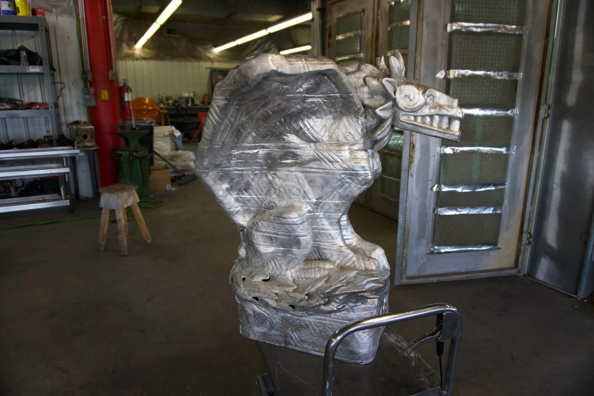
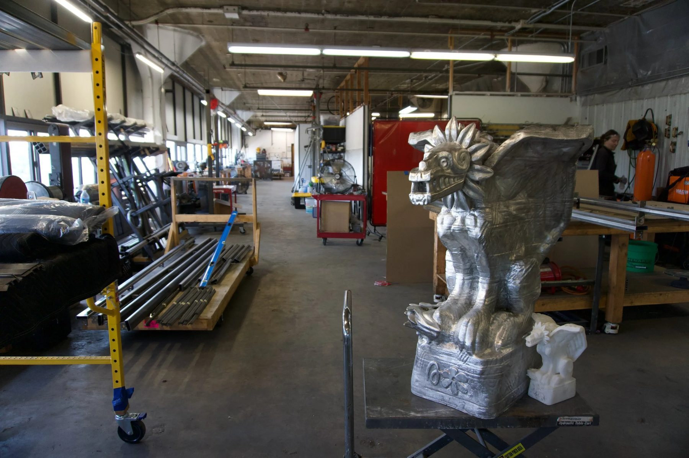
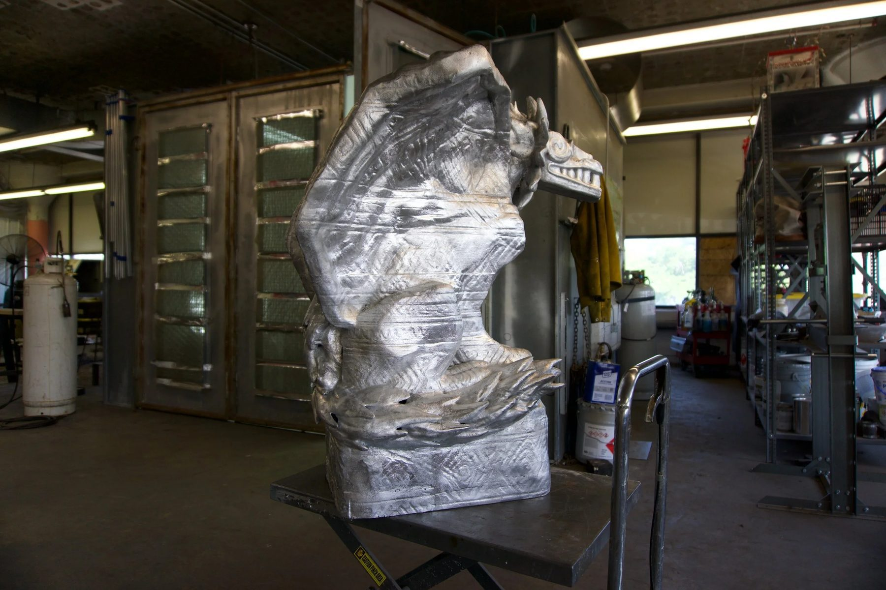
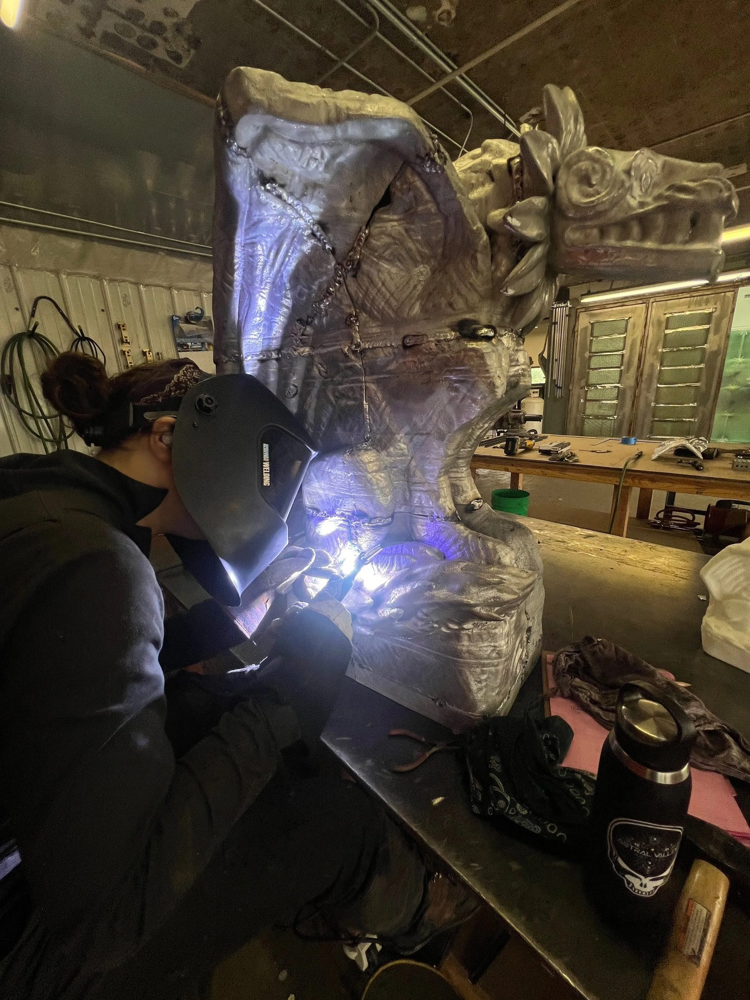
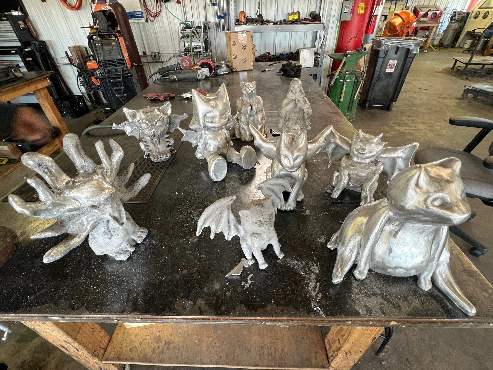
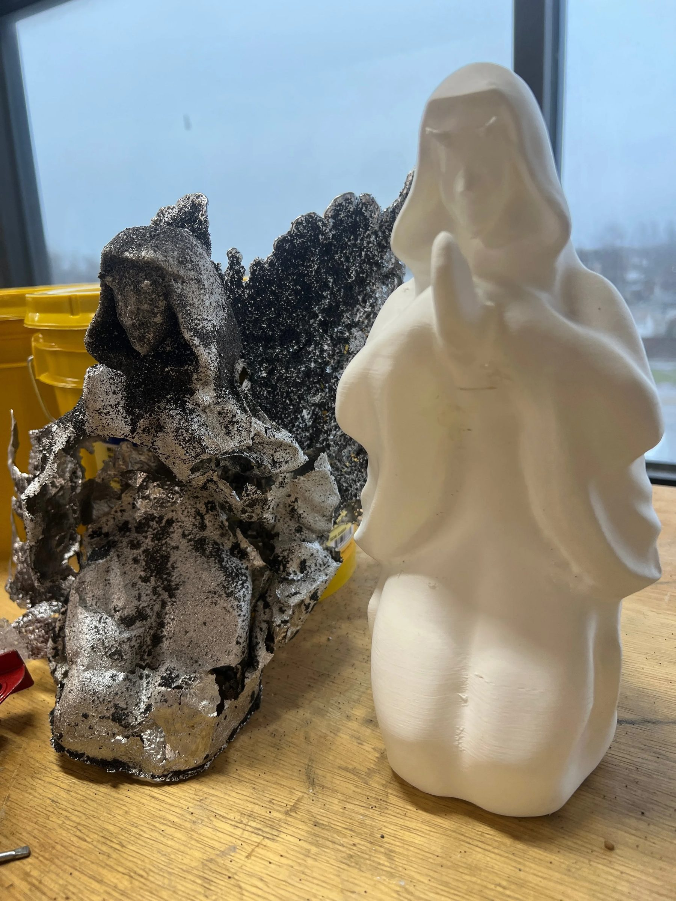
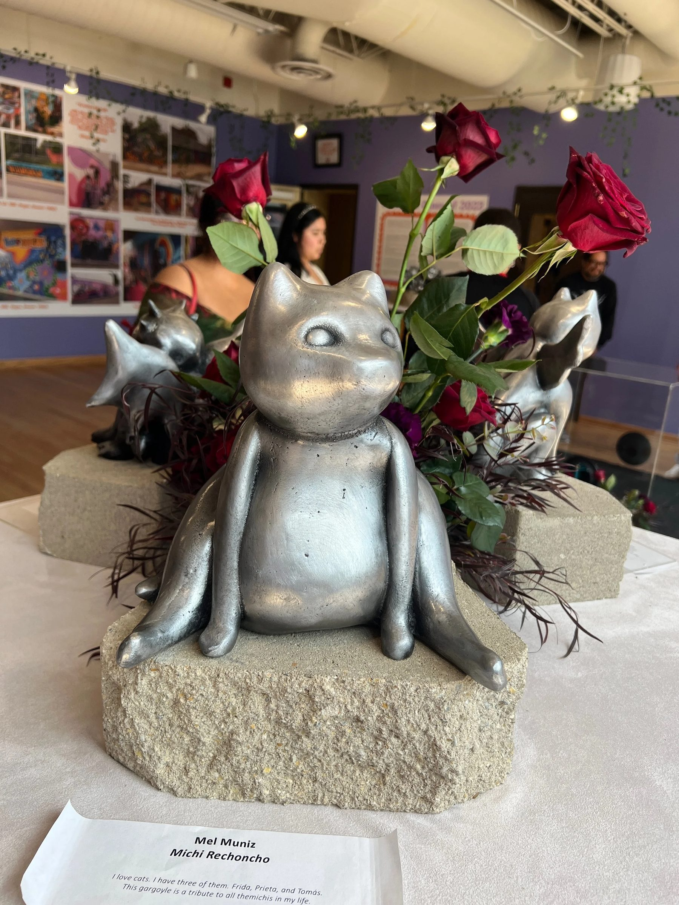
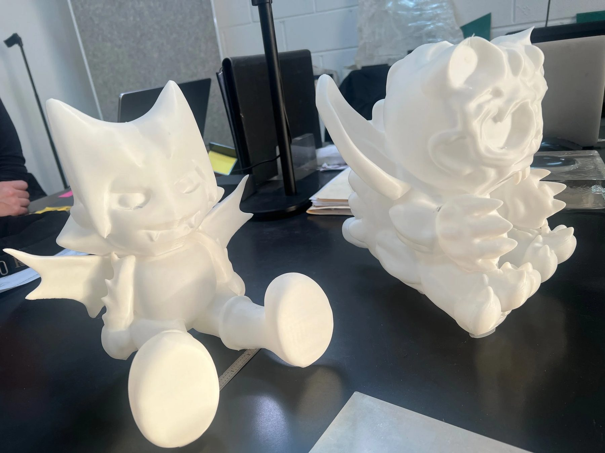
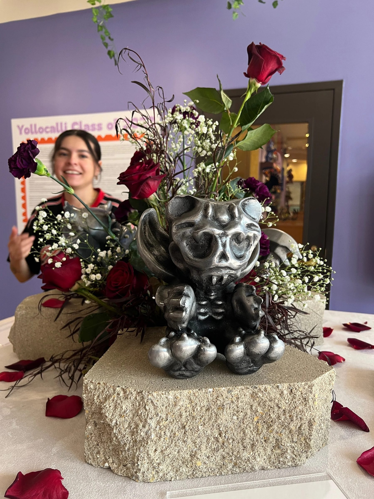

Public Art / 2024 / Chicago, IL
Jardin de Gargolas
YolloCalli Arts Reach

Student designed garden gargoyles taken from 3D model to cast aluminum sculpture.
The work
Little Village teens with Yollocalli Arts Reach, the youth art program of the National Museum of Mexican Art, designed their own garden gargoyles in 3D software, with artist Secret of Manna. The idea grew from a rainwater garden and a bird bath, and the gargoyles are destined for Jardin Malinalli, the museum's youth garden in Pilsen and Little Village.
The material question
A file on a screen had to become a permanent metal object, true to what each student made, and the students had to understand the process well enough to design for it.
The making
The class came to the shop first. We showed them how their 3D prints would become molds and how metal would be poured, and poured a tiny demonstration mold that day. What they brought back for the real pour was really impressive. We printed the sculptures in house as positives for a resin bonded sand mold, a lost PLA process, then cast in aluminum, welded, and finished in a dark patina. We cast one early for a big reveal: everyone had seen the prints, but seeing it in metal was something else. The rest took about a week to cast.
In place
Unveiled in April 2024 in the museum courtyard, part of the exhibition New Age Grotesque. Each gargoyle sat on its own pedestal in a small garden of flowers, each given its own space and all displayed as equals.
Details
- Year
2024 - Location
Chicago, IL - Category
Public Art - Materials
Cast aluminum, dark patina
Credits
- YolloCalli Arts Reach
- Artist educator: Secret of Manna
Studio
- ChiLab Studio
- Chicago, Illinois
- Established 2013








Bring us a drawing,
a model, or a hunch.
The studio
Specialty material projects for architecture, interior design, public art, and the fine arts.
ChiLab Studio, Chicago, Illinois. Established 2013.
What we do
- Metal casting
- Glass
- Finishes
- Digital fabrication
- Metal fabrication
- Restoration
- Project management
Contact
info@chilabstudio.com
chilabstudio.com
Instagram @chilabstudio